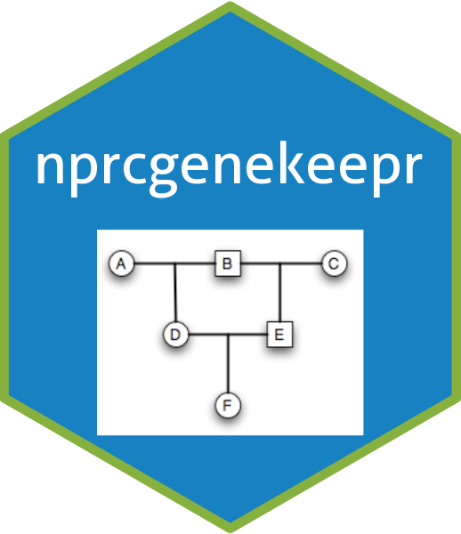

Calculates the sex ratio (number of non-males / number of males) given animal Ids and their pedigree
Source:R/calculateSexRatio.R
calculateSexRatio.RdThe Males are counted when the ped$sex value is
"M".
Females are counted when the ped$sex value is not
"M". This means animals with ambiguous sex are counted with the
females.
Arguments
- ids
character vector of animal Ids
- ped
datatable that is the
Pedigree. It contains pedigree information including the IDs listed incandidates.- additionalMales
Integer value of males to add to those within the group when calculating the ratio. Ignored if calculated ratio is 0 or Inf. Default is 0.
- additionalFemales
Integer value of females to add to those within the group when calculating the ratio. Ignored if calculated ratio is 0 or Inf. Default is 0.
Examples
library(nprcgenekeepr)
data("qcBreeders")
data("pedWithGenotype")
available <- c(
"JGPN6K", "8KM1MP", "I9TQ0T", "Q0RGP7", "VFS0XB", "CQC133",
"2KULR3", "HOYW0S", "FHV13N", "OUM6QF", "6Z7MD9", "CFPEEU",
"HLI95R", "RI0O7F", "7M51X5", "DR5GXB", "170ZTZ", "C1ICXL"
)
nonMales <- c(
"JGPN6K", "8KM1MP", "I9TQ0T", "Q0RGP7", "CQC133",
"2KULR3", "HOYW0S", "FHV13N", "OUM6QF", "6Z7MD9", "CFPEEU",
"HLI95R", "RI0O7F", "7M51X5", "DR5GXB", "170ZTZ", "C1ICXL"
)
male <- "VFS0XB"
calculateSexRatio(ids = male, ped = pedWithGenotype)
#> [1] 0
calculateSexRatio(ids = nonMales, ped = pedWithGenotype)
#> [1] Inf
calculateSexRatio(ids = available, ped = pedWithGenotype)
#> [1] 17
calculateSexRatio(
ids = available, ped = pedWithGenotype,
additionalMales = 1L
)
#> [1] 8.5
calculateSexRatio(
ids = available, ped = pedWithGenotype,
additionalFemales = 1L
)
#> [1] 18
calculateSexRatio(
ids = available, ped = pedWithGenotype,
additionalMales = 1, additionalFemales = 1L
)
#> [1] 9
calculateSexRatio(
ids = nonMales, ped = pedWithGenotype,
additionalMales = 1, additionalFemales = 0L
)
#> [1] 17
calculateSexRatio(
ids = character(0), ped = pedWithGenotype,
additionalMales = 1, additionalFemales = 0L
)
#> [1] 0